- 1、关注“中国驻毛里求斯大使馆”微信公众号（chinaemb_mu），获取最新资讯
- 2、趣味阅读：《天堂原乡》第二章《海岛揽胜》（由使馆外交官集体撰写）
- 每个人心中都有一座岛。来到美丽的毛里求斯，无论是想与爱人徜徉在棉柔的细沙海滩边，享受朝阳落日，还是和三五好友远足攀岩，出海畅游，体会活力友情；无论是饕餮原汁原味天然秀色，感叹大自然鬼斧神工，还是抚摸残垣古壁，追寻历史记忆；在这座神奇的岛上，都能找到属于你的那片乐土，契合你现时的心情。海岛揽胜，让我们沿着既定的足迹先初尝一番毛岛的美吧。
一、北线：皇家植物园 ---糖业博物馆---大湾---红顶教堂
- 1、皇家植物园(Pamplemousses Botanical Gardens)
-
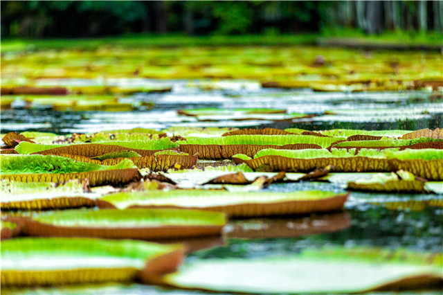
- 庞普勒穆斯皇家植物园始建于1735年，最初是法国总督拉波多内的私人花园，名为“我的花园。”1768年法国园艺家皮埃尔•普瓦沃(PierrePoivre)迁居到此，开始引进世界各地特有的植物和动物。经过两个多世纪的经营，现已成为一个占地60英亩、国际知名的大型植物园。1988年，为纪念已故的毛开国总理西沃萨古尔.拉姆古兰爵士，该园更名为拉姆古兰植物园，园里有拉姆古兰墓地。
-
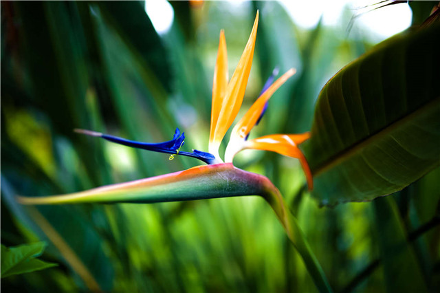
- 园中有500多种珍稀植物，单兰花就有60个不同的种类，还有80种从巴西、马达加斯加和中国等地引进的棕榈科植物和近20种西南印度洋特有物种，包括巨棕榈树、辣椒树、乌木树、红木树、露兜树和蒲葵属植物等。植物园内池塘中有珍稀的亚马逊睡莲，直径一般在2米左右，是世界上最大的莲花，可以承受住一个婴儿的重量。植物园内的一棵葡萄柚树原产地爪哇，传说300多年前运输此树过程中因海船缺乏蔬菜、水果、干净的饮用水，300多人为此付出了生命，为了纪念历史上逝去的那些人，这个园地包括这个地区都以这棵树名Pamplemousses来命名了。
-
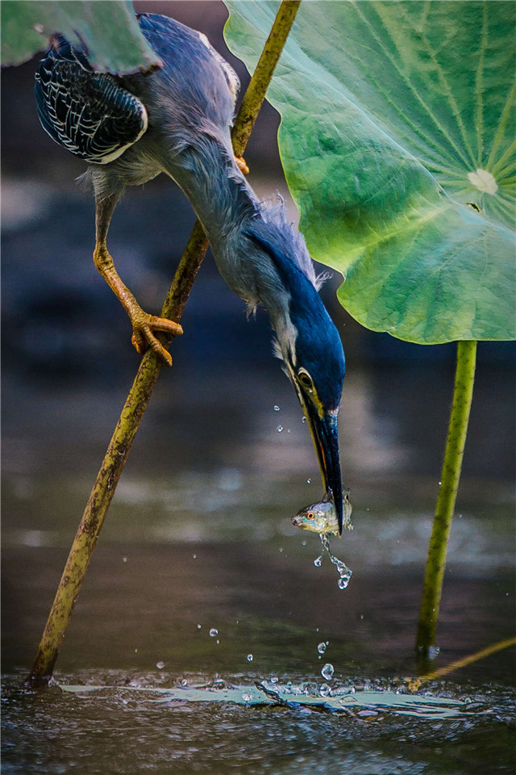
- 园内还有一些独特动物，包括象龟、印度尼西亚鹿和马达加斯加红嘴鸟等。外国领导人来访时，毛政府一般会安排参观植物园、向拉姆古兰墓献花圈并植树留念。园内有我国李鹏委员长和全国政协李瑞环主席植的友谊树。
- 小贴士：
- 毛里求斯国花叶子花
-
- 1992年3月12日毛里求斯共和国成立，正式将叶子花命名为国花。
- 以法国著名的植物学家Louis Bouton的名字命名。
- 这种花只能在毛里求斯当地一个野外才能找到。
- 这种红橘花的藤蔓长达3米，外观很壮观。
- 能够很快适应各种干燥环境，通常在6月到10月开花。
- 2、糖业博物馆（L'Aventure du Sucre）
- 糖业博物馆于2002年10月28日开放，占地约5000平方米，坐落在一所于1999年废弃的古老制糖工厂里，经对其三年改造而成。博物馆向人们展示了四个多世纪以来都与制糖工业息息相关的毛岛的发展过程，通过图片以及真实的机器工具等生动的方式向人们展现制糖全过程。博物馆展览了一些原始的制糖机器，向游客展现了制糖工业的诞生和进程、毛里求斯人口发展的历史，同时也向旅客介绍制糖植物、制糖流程和糖业市场的情况。大厅的那艘船是当年毛里求斯将甘蔗运输到马达加斯加的工具。在Sugar World陈列了15种口味各异、功能不一的糖，游客可以品尝挑选种类多样的糖制品。
- 3、大湾(Grand Baie)
-
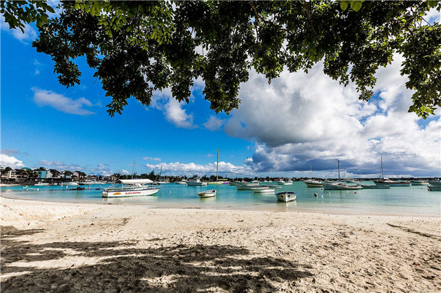
- 大湾是毛里求斯西北部海岸的一个港湾小镇，位于路易港以北20公里处。这个昔日的小渔村现在已经发展成为毛里求斯岛最著名的疗养胜地和度假天堂。大湾三面为陆地环绕，海水平静。沿着港湾形成一片蜿蜒的白色沙滩，岸边有很多餐馆、酒吧、音像店和纪念品商店。吸引许多游客这里垂钓、玩帆板、或者潜水。大湾附近还有两座很大的Shopping Mall，供游客休闲购物。
- 4、红顶教堂（Red Roof Church）
-
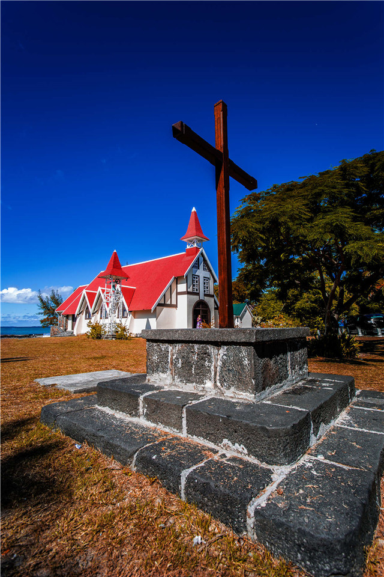
- 红顶教堂位于岛最北端Cap Malheureux镇，该镇是英国人攻占毛岛时，约翰将军率领兵队驻扎的地方。这座由法国人建造的有着红色屋顶的Auxiliatrice圣母院教堂虽然小，但建筑工艺精湛，白墙、红顶的建筑衬着绿色草坪及后方的湛蓝海洋，成为毛里求斯明信片中的绝佳取景地点。
-
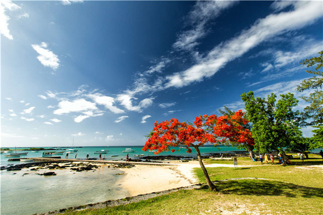
- 近年，陈小春和应采儿及很多明星的许多蜜月婚纱照都在这里拍摄，如果你和自己的爱人一起来，不防带上婚纱，随便哪个角度出来的都会是大片，因为有着蓝天、白云、海洋、帆船，所有浪漫的元素都齐全了。
二、中线：路易港---台伯山---火山口---圣水湖---黑河森林公园---七色土---茶园
- 1、路易港（Port Louis）
-
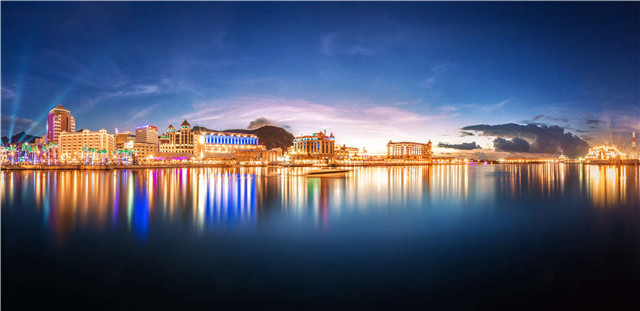
- 中央市场（Central Market）
- 路易港的中央市场是当地生活与传统的中心，各种原料和产品都聚集在这里。市场里水果蔬菜各种家用品一应俱全，还有当地手工艺品、亮丽沙龙、毛里求斯特有的香草味红茶、渡渡鸟造型手工艺品、印度香料都是非常好的手信。除了小物件，在这里也可以买到毛里求斯最著名的手工艺品——船模。
- 赛马场（Champ de Mars）
-
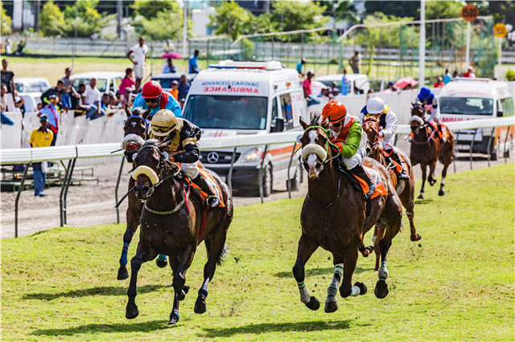
- 位于路易斯港市中心的香榭丽舍大街赛马场是毛里求斯人们周末生活的中心，它是世界第二古老，同时也是南半球最古老最大的赛马场，由英国官员德雷珀上校建造。1812年6月25日，毛里求斯在此举行了有史以来的第一场跑马比赛。毛里求斯赛马俱乐部是世界上第二古老的赛马俱乐部，历史仅次于英国赛马俱乐部。赛马经常在5月至11月的周六或者周日举行，每次赛马都会吸引将近3万人前来观看。毛里求斯以它蒸蒸日上和久经考验的赛马团而引以为豪，吸引着来自世界各地的赛马骑师。用于比赛的骏马也从南非，澳大利亚，英国和法国进口。
- 关帝庙（Kwan Tee Pagoda）
- 首都路易港有七座关帝庙，最大的一座于 1842年落成，至今已有170年的历史,坐落在港口区,它不仅是非洲最早的关帝庙，也是毛里求斯现有七座关帝庙的祖庙。祖庙由本地华侨华人慷慨捐地集资兴建而成，成了华侨祭祀祖先、思念祖国、裁决纠纷、救助残弱的中心。
- 毛里求斯1981年9月16日发行《宗教与文化》邮票一套3枚，其中第3枚以位于该国首都路易港的关帝庙内景为主图，它既是“外国邮票中的中国事物”的当然成员，也是一枚难得的“关公”专题邮票。从邮票中可以清晰见到关帝庙内雕工精细、金碧辉煌的神龛及其中供奉的关帝雕像。
- 炮台山（La Citadelle）
-
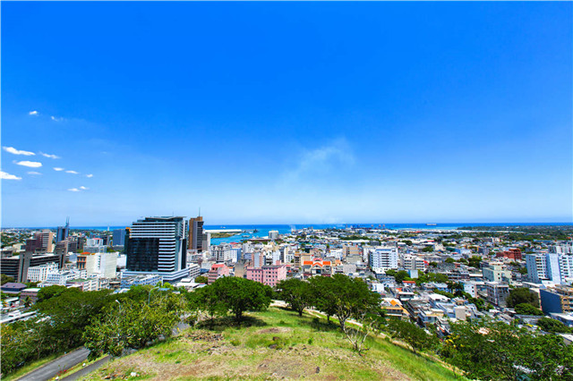
- 炮台山位于首都路易港市中心，在山顶可俯瞰整个路易港市容。山上堡垒名为阿德莱伊德城堡，建于1834-1840年间，城堡名称源自当时英国王妃的名字，修建时的主要目的是预防当时旨在推翻奴隶制度的反抗运动。该城堡曾因长年弃用而成为废墟，上世纪90年代被重新翻修，成为路易港的著名景点。
- 唐人街（China Town）
- 有海水的地方，就有华人。在毛里求斯的唐人街，你能看到来毛200多年华人生活的痕迹，古老的街道，一家有一家独特韵味的中国小商店里，琳琅满目的中国商品应有尽有。每年在这里，都会举行大型的纪念中国传统节日的活动，体现出华侨华人在毛里求斯的地位。
- 蔻丹广场（caudan waterfront）
- 蔻丹广场是路易港的购物中心，集中了各式各样的商铺，在这可以买到服饰、护肤品以及当地特色的纪念品。广场依山靠海，风景秀丽，餐厅、赌场、步行街一应俱全。从广场就能看到港口内停泊的一艘艘渔船、游艇，还有毛里求斯海岸警卫队的巡逻舰艇，体会碧海白帆的感觉。
- 台伯山（Thabor）
- 在毛岛的群山之间，有一座临渊的通体洁白的城堡状教堂，毛岛人称之为台伯，与耶路撒冷的圣山同名，可见其在当地天主教信徒心中的分量。19世纪英国自然学家达尔文和20世纪末教皇让•保罗二世都曾在此居住，更为这座建筑增添了传奇色彩。教皇居住的屋子如今仍然大致保留着当初的模样。1834年，约翰•罗伊德设计并建造了这座建筑，取名为白塔，此后捐献给了路易港教区，作为教士的居所。1979年，这座教堂连同其所在的土地开始被称作台伯山，时至今日，一直发挥着传教育人的功用，是毛岛人心中的信仰坐标。在它面前流淌的赛什河，数百年间静静聆听着从四面八方汇聚而来的信徒们的虔心祷告。
- 2、圣水湖（Grand Bassin）
-
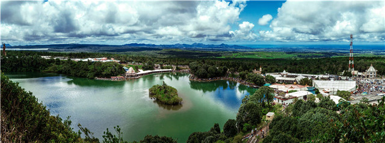
- 圣水湖位于毛里求斯南部，被当地人们视为神圣的湖水，是毛岛最大的淡水湖。湖泊由火山喷发形成的，环境安静而优美。湖边有着一座十几米高的印度教佛像，还有一座除印度本国以外最大的一座印度教寺庙。这里同时是毛里求斯印度信徒朝拜的地方，每年的Maha Shivarati（通常是2月20-3月21日之间的某一天），很多毛里求斯的印度人都会走出家门，徒步前往圣水湖边朝圣。这是印度以外最大规模的印度教徒朝圣事件。
-
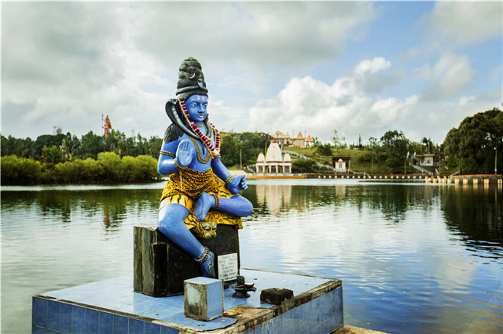
- 关于圣水湖的传说有许多：其中一个是当年大神湿婆和她的妻子雪山女神在世界上空飞行时，他的头上还辗转流淌着恒河圣水，他们看到了这个无人居住的美丽小岛，并决定降落。在降落的过程中，头上的几滴水坠落地面，形成湖水。当离开时，雪山女神不愿意把水留在这里，哪怕是几滴，但湿婆说，将来，一些生活在恒河边上的人们的后裔会居住在这里，并在这里供奉她。还有一个是这样的：毛里求斯北部的一个印度教僧侣声称梦到在岛的南方有一个湖泊是与印度的恒河，恒河相通的。于是这名僧侣跟其他几位朋友也很快开始寻找圣湖的旅程。历经艰苦的旅程（那个时候，这一带是没有道路的），一行人到达湖边，僧侣声称这就是他梦中的圣湖，并命名之为Pari Talao（Pari就是Fairy）。第二年，在印度教重要的节日：Maha Shivarati（意为伟大的湿婆之夜）9名朝圣者来到湖边，并依照印度教的习俗带了一些圣水回到北部印度教神庙。从此，每年到湖边朝圣，成为毛里求斯印度人的重要习俗。1972年，一位僧侣从印度的恒河取水并在湖边搞了一个圣水混合仪式，从此，这个湖的名字正式更名为Ganga Talao。
- 3、火山口（Trou aux Cerfs）
-
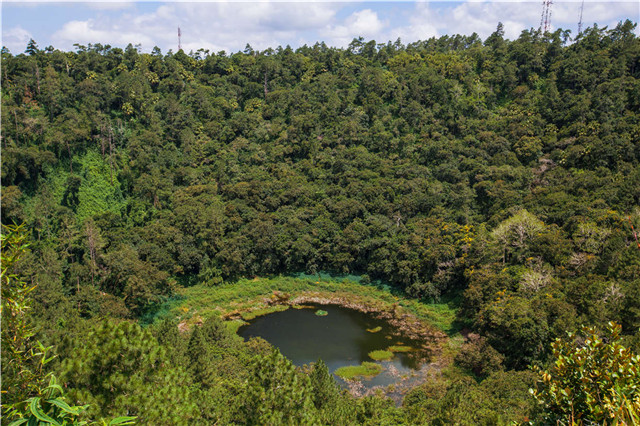
- 火山口位于毛里求斯中部Curepipe镇上，曾有地质证据表明，毛里求斯群岛的形成正是由于几千年前该火山的爆发。火山口四周绿树茂盛，环境宁静而优美，是毛岛一处著名的旅游景点。居高俯瞰，火山口保留得很完整，呈凹陷的圆形状，其表面直径350米，底部直径约180米，深85米，火山口内布满青草，全年沼泽，外围则是整齐划一的林木，宛如绿色地毯般美丽。站在山上向下俯瞰，可以远眺Curepipe镇的市景以及高原四周连绵的山脉,呈现一派原始自然风光。
- 4、黑河国家森林公园（Black River Gorges National Park）
-
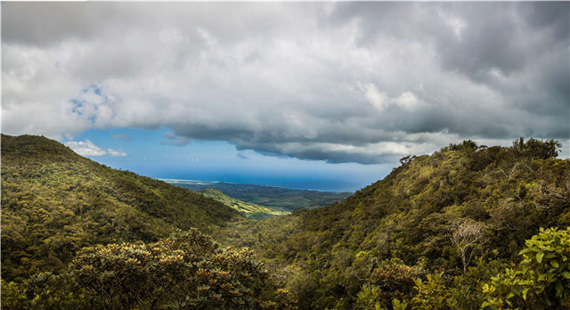
- 黑河国家森林公园占地6574公顷，是毛里求斯最重要的自然遗产保护区，园内约有311种本土原生与本地特有花卉植物、9种独特栖息在毛里求斯的鸟类。黑河山的最高点是小黑河峰，高达826米，黑河山峰峦起伏，诸峰间百涧奔流，每当雨季来临的时候，溪流涨水，渲嚣而下，风景十分美丽。
- 5、七色土（Seven Color Earth）
-
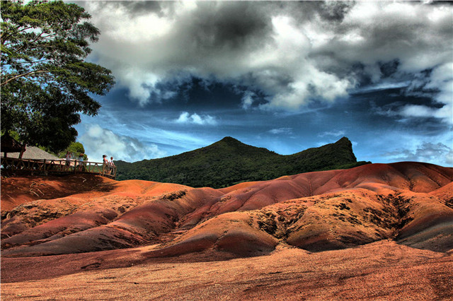
- 七色土是毛里求斯西南部一处由七种颜色构成的彩色山丘，山丘大小接近半个足球场，每当阳光好时，太阳照射在山丘上，折射出绚烂的光芒。在全球，这种同时拥有七种颜色的泥土，都很罕见。毛国人形象地称这里为“七色土”。这里是一位叫做查马雷尔的法国爵士在18世纪首先发现的。起初他想在这里种甘蔗，但是发现附近的甘蔗田郁郁葱葱，唯独这里寸草不生，泥土的颜色也与周边不同。于是他邀请地质学家前来考察，七色土才得以展现在世人眼前。此后查马雷尔家族凭借着这块宝地开发旅游资源，成为毛岛的富翁之一。
-
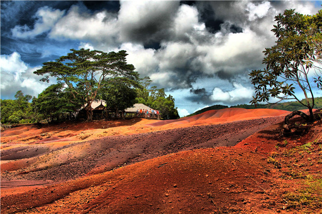
- 七色土的形成主要是因为火山岩融化后冷却的速度不均，加上土质里所含的水晶、火山灰里的多种金属成分，经过阳光照射之后便展现出红、绿、蓝、黄相间，还泛着淡淡的绿色、金色、棕色的奇光彩。地质学家曾做过一个实验，就是将不同颜色的彩土混合后，放入试管中，经过数天搁置，这些不同颜色的彩土会自动分离，十分神奇。
- 6、茶园(Bois Cheri Tea Garden)
-
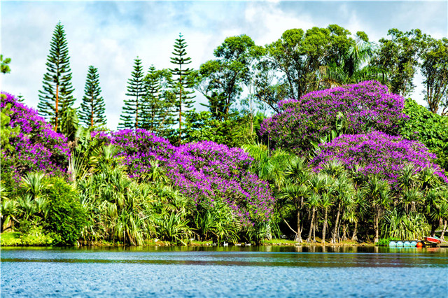
- 茶园坐落在岛的西南部，始建于1892年，已有116年历史。由茶厂、茶博物馆和茶园三部分组成。茶厂采用机械化作业，生产各种热带口味的袋装粉末红茶。茶厂除正常运转生产还接待来自世界各地的人，他们会在这里参观毛里求斯本地红茶的生产过程，在博物馆里陈列着之前古旧的制茶机器、茶的品种、茶器皿、品茶的茶具,游客可以了解岛上整个茶的历史、背景。
三、西线：Tamarin看海豚---摩尔山---水下瀑布---鸟公园
- 1、看海豚（Tamarin）
-
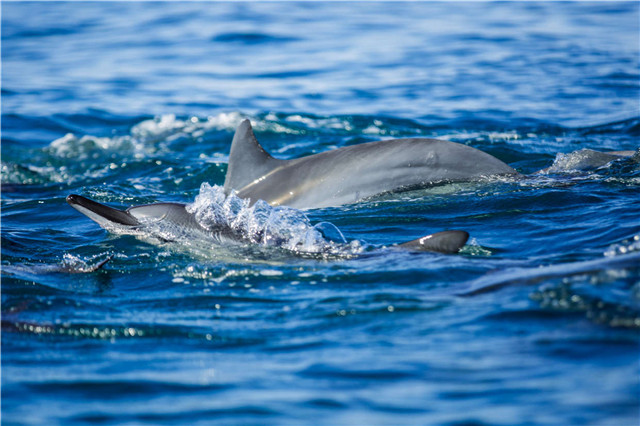
- Tamarin位于毛岛西部，是著名的出海观看海豚圣地。出海不久即可看到海豚围绕船只嬉戏，如果运气好还能看到成群结队的海豚。游客可以准备好浮潜设备，与海豚在水中共舞。这里海浪稍大，也是冲浪等水上运动爱好者的天堂。
- 2、摩尔山(le Morne)
- 摩尔山在2008年正式被联合国教科文组织(UNESCO)列为世界文化遗产。它的自然景观保护得很好,几乎都是原始的美景。除了令人窒息的自然风光让人驻足外,它在毛里求斯的历史记忆中占有非凡的地位，当年能成功逃脱离开蔗田奴隶工作的黑奴隶，带着铁链攀爬到556米高的摩尔山上中玄武岩大裂缝匿藏起来。以至于直到大英帝国废除奴隶制后，以进口“契约劳工”代替奴隶，故而派遣英国士兵上山通知藏匿于山上的奴隶，但藏匿的奴隶却认为是在骗人，他们选择纷纷从山顶跳下表示对于奴隶制的控诉。从此。摩尔山不但是抵制奴隶的象征,也是毛里求斯纪念废除奴隶制的起点, 每年的2月1日是成为毛里求斯废除奴隶制纪念日（Abolition of Slavery），这座山及其周围环境已经成为圣地,受到世人的尊重。
-
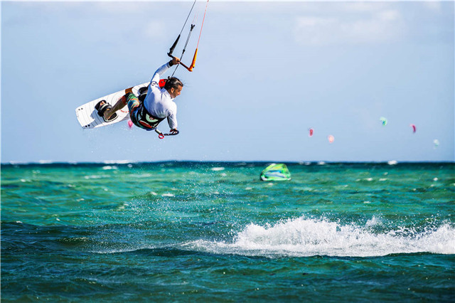
- 水下瀑布
- 在摩尔山旁边的海中，有一个独特的景点，被称为水下瀑布。但是游客只能从空中看下来才能欣赏到这种令人惊叹的美景：当沙子和淤泥在这里不断的往水下的一个海沟沉积，给人一种水下瀑布的感觉，颇为壮观。
- 3、鸟公园（Casela nature & leisure park）
-
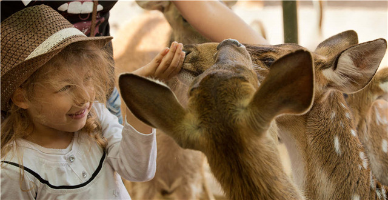
- 鸟公园位于黑河区，占地面积14公顷，于1979年建成。公园饲养着160种、21个族类的2500多只鸟，有特珍贵的南美大鹦鹉、巨嘴鸟、粉红鹳以及丹顶鹤和冠鸠等。除飞鸟以外，这里还有水族馆，饲养着各种各样的海洋动物。园内还有老虎、豹子、狐猴、狮子、斑马、大型龟以及小型的袋鼠。这里还有来自世界各地的鸟类标本陈列室，在那里可以看到毛里求斯长颈粉鸽、渡渡鸟等珍稀鸟类标本，鸟公园内活动项目丰富，骑上越野摩托、越野车、体感平衡车，尝试印度洋最长的滑索和吊桥，还可以体验狮虎同行。每个人都能找到属于自己的乐趣！
- 游玩项目介绍：
- A、滑索（Ziplines）
- “Le Full”（全天套餐）包含吊桥、双人滑索、单人滑索（400米、300米、200米）、徒步、水中滑索、游泳、烧烤午餐以及峡谷游泳。这些活动项目虽然有些刺激，但是简单易学，几乎每个游客都能尝试。您也可以选择约1小时的活动：“Le Pont”（吊桥）包含跨越一座尼泊尔式吊桥，三个单人滑索和两个双人滑索。“La 400”（400米滑索）包含四个双人滑锁和最富盛名的长达400米的滑索，享受22秒自由飞翔的感觉。
- B、越野摩托和越野车（Quad & Buggy）
- 越野摩托和越野车均为四轮两座，游客可以驾驶它们穿越公园中的非洲自然保护区，去寻找斑马、鸵鸟和非洲羚羊，时间约为1小时。此外，您也可以额外续订1小时，在本地特有的干燥林中继续野外探险的乐趣，还能够看见野猪、鹿和各种奇异的鸟类。所有的户外活动都配有导游和专业的摄影师。在骑上车子出发之前，所有参与者都会在练习场地熟悉并练习驾驶，也以便导游更好的了解每个人的驾驶水平。公园提供头盔和无纺布防尘帽、骑行结束后还提供湿毛巾和淋浴设备。
- C、体感平衡车（Segaway）
- 驾驶体感平衡车探索非洲自然保护区才是真正的生态游。在动物中穿行也不必担心打扰到它们的悠然自得和生活环境。体感平衡车根据身体的运动来控制，游客不必花太多力气就可以驾驶着车尽情享受美丽风景带来的乐趣。驾车出发之前会进行简短的培训和练习，帮助您熟悉这一创新的电动代步工具。
- D、电动车（Electric cart）
- 这一绿色环保的电动车专为陪同的成人家属使用，它容易驾驶，可以搭乘老人和儿童。
- E、大型猫科动物（Big Cats）
-
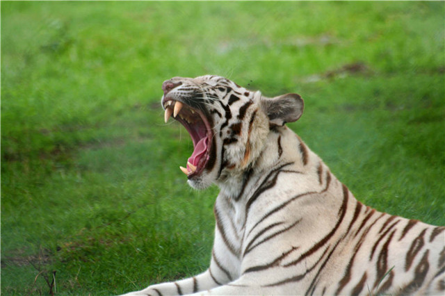
- 这是与狮虎豹面对面，抚摸它们，与它们同行的独特体验！车上观光Drive Through Attraction：乘车30分钟，穿越12公顷保护区，您会看到四只雌狮和两只雄狮。它们曾经是“与狮同行”活动的主角，现在成为了毛里求斯第一批成年狮子。游客有机会看到狮子们爬树，追赶兔子，相互嬉戏，它们以狮子独有的方式消磨着时光……如果幸运，还能看到饲养员与狮子们亲密玩耍。平台观景：儿童可以站在木质观景台上俯瞰露天笼中的狮子老虎们，最大程度的保证孩子们的安全。
- F、摄影之旅（Photo Safari）
- 乘坐10-30座的游览车，用45分钟体验非洲自然保护区，观察鹿、斑马、鸵鸟、非洲羚羊以及他们生活的纯天然环境。如果想要更加亲近自然，游客还可以预定两小时的专属游览，穿越自然保护区的干燥林和大草原，以及栖息在那里的野猪、鹿和各种珍奇的鸟类。
- G、峡谷运动（Canyoning）
- 深度接触大自然的冒险运动！Casela公园提供两条峡谷运动线路，一条是Papayes线路（半天），另一条是游泳和野餐线路（全天）。在冒险开始前，参与者都要进行培训，游客将体会到原汁原味的峡谷速降，高度在5-20米不等。根据游客选择的不同路线，包含瀑布、徒步、峡谷游泳、钢索攀登和吊桥，会看到壮阔的山川和西海岸全景。
- H、钢索攀登（Via Ferrata）
- 这是毛里求斯唯一的飞拉达攀登，利用设置山上的钢索，配合安全带及保护带的方式登山，攀越峭壁、峡谷和高原。几乎所有人都能尝试。吊桥等简单项目适合初次尝试此类活动的游客，可在导游的帮助下会较轻松的完成。借助设置在山上的设备，游客能够安全的到达Mamzel Zabeth的顶峰，将山川和湖泊的全景尽收眼底，鸟瞰西海岸和卡得邦市的Beaux-Songes高原。
- I、峡谷秋千（Canyon Swing）
- 峡谷秋千类似于蹦极，从45米高的平台上起飞，纵身一跃，您将体验垂直降落的快感。线缆安装的方式能够让游客像坐秋千一样前后摆荡。
- J、儿童少年（Kids& Teens）
- Casela公园为每个人都提供适合他的娱乐项目！孩子们可以在宠物农场亲近自然，抚摸和喂小动物。农场提供喂动物用的食物和奶瓶。孩子们也可在Tilapia池塘中进行迷你钓鱼比赛，或者在入口处的充气城堡中玩耍。喜欢亲子互动的游客可以选择全天的滑索项目，与孩子一起体验走吊桥和坐滑索的刺激，一起感受印度洋地区最长的滑索！更多信息请见滑索宣传页。体感平衡车可以帮助孩子们亲自自然、熟悉自然、近距离观察斑马、鹿等等。更多信息请参照体感平衡车宣传页。
四、南线：鳄鱼公园---观浪台与Gris-Gris---自然桥---蓝海湾
- 1、鳄鱼公园（Vanilla）
-
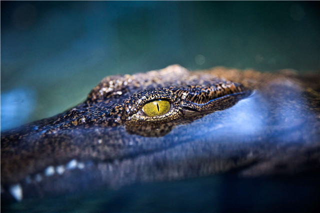
- 鳄鱼公园是毛里求斯的一个小型动物园，这里是印度洋地区最大的昆虫搜集地，也是2000多条尼罗河鳄鱼的家园，园内呈茂密的热带雨林景观，饲养着包括鳄鱼在内的数十种西南印度洋群岛的野生动物。公园曾为香草种植园，后澳大利亚动物学家Owen Griffiths及其毛里求斯籍妻子发现该地适于养殖尼罗河鳄，于是从马达加斯加引进了五条。目前该园是毛饲养和繁殖鳄鱼的基地，除供观赏外，还可制作鳄鱼标本、鳄鱼皮包、皮带和首饰等手工艺品。园内设有快餐厅，可供游客品尝鳄鱼肉。除鳄鱼外，园中还有猴子、野猪、鹿、巨龟、蜥蜴、蝙蝠等爬行和小型哺乳动。鳄鱼公园还有世界最大的Aldabra乌龟人工饲养场，最大的乌龟已近百岁,重95公斤。热带森林，百年开花巨树,稀有植物让游客流连忘返。
- 2、观浪台与Gris-Gris
- Gris-Gris位于毛岛最南边，因其海边陡峭岩壁和海浪拍击的气势闻名，因岛南珊瑚礁较少，海浪没有阻挡的击打在焦黑的岩壁上，发出阵阵声响，浑如凄婉的哭声，却有种无法言说的美。坐在建于悬崖上的观浪台看岩壁的“哭石”（Roche Qui Pleure）部分，会给游客留下独特的视听感受。
- 3、自然桥（Pont naturel）
-
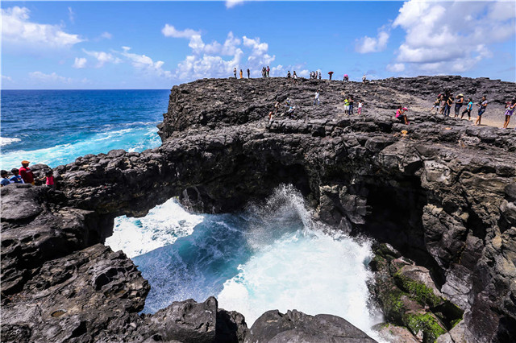
- 穿过岛南一片茂密的甘蔗林，在海边的悬崖峭壁上有一条天生的自然桥，令人不得不感叹大自然的鬼斧神工。海浪在桥下吐着白沫，汹涌地翻滚。行走至桥中部，或许会产生孤悬于海天之间的无助和恐惧，但翻越之后的却让人回味万千。
- 4、蓝海湾（Blue Bay）
-
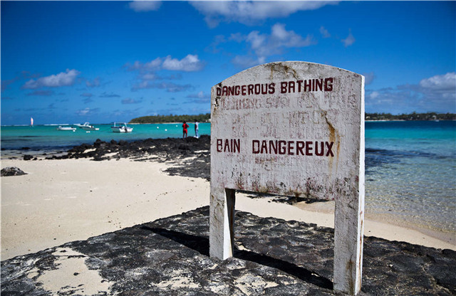
- 蓝海湾位于毛里求斯岛的东南部,临近机场，这里是毛里求斯最美的珊瑚所在地，拥有38种不同的珊瑚和70种不同的鱼。周围沙滩沙质柔软细腻，海水蔚蓝醉人。游客可选择乘坐玻璃船观看清澈的水下世界，体验不一样的感觉。
-
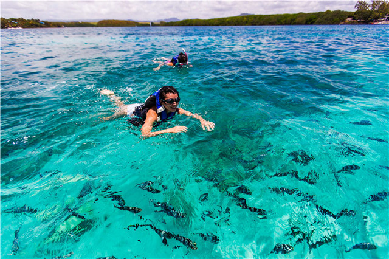
本文所用图片由摄影师陈亚诺提供